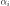

SubsetSamplingResult¶
-
class
SubsetSamplingResult(*args)¶ Subset sampling result.
See also
- Attributes
thisownThe membership flag
Methods
Draw the importance factors.
Accessor to the block size.
Accessor to the object’s name.
Accessor to the coefficient of variation.
getConfidenceLength(*args)Accessor to the confidence length.
getEvent()Accessor to the event.
getId()Accessor to the object’s id.
Accessor to the importance factors.
Accessor to the mean point conditioned to the event realization.
getName()Accessor to the object’s name.
Accessor to the outer sampling.
Accessor to the asymptotic probability distribution.
Accessor to the probability estimate.
Accessor to the object’s shadowed id.
Accessor to the standard deviation.
Accessor to the variance estimate.
Accessor to the object’s visibility state.
hasName()Test if the object is named.
Test if the object has a distinguishable name.
setBlockSize(blockSize)Accessor to the block size.
setEvent(event)Accessor to the event.
setName(name)Accessor to the object’s name.
setOuterSampling(outerSampling)Accessor to the outer sampling.
setProbabilityEstimate(probabilityEstimate)Accessor to the probability estimate.
setShadowedId(id)Accessor to the object’s shadowed id.
setVarianceEstimate(varianceEstimate)Accessor to the variance estimate.
setVisibility(visible)Accessor to the object’s visibility state.
-
drawImportanceFactors()¶ Draw the importance factors.
Warning
It is necessary to enable the history of the model to perform this analysis (see
MemoizeFunction).- Returns
- graph
Graph Importance factor graph.
- graph
See also
-
getBlockSize()¶ Accessor to the block size.
- Returns
- blockSizeint
Number of terms in the probability simulation estimator grouped together.
-
getClassName()¶ Accessor to the object’s name.
- Returns
- class_namestr
The object class name (object.__class__.__name__).
-
getCoefficientOfVariation()¶ Accessor to the coefficient of variation.
- Returns
- coefficientfloat
Coefficient of variation of the simulated sample which is equal to with the variance estimate and the probability estimate.
-
getConfidenceLength(*args)¶ Accessor to the confidence length.
- Parameters
- levelfloat,
![level \in ]0, 1[](../../_images/math/1d6b8c10a223723deaf9dff64aac3d4ccd1cab99.svg)
Confidence level. By default, it is
 .
.
- levelfloat,
- Returns
- confidenceLengthfloat
Length of the confidence interval at the confidence level level.
-
getId()¶ Accessor to the object’s id.
- Returns
- idint
Internal unique identifier.
-
getImportanceFactors()¶ Accessor to the importance factors.
- Returns
- importanceFactors
PointWithDescription Sequence containing the importance factors with a description for each component.
- importanceFactors
See also
Notes
The importance factors  are evaluated from the coordinates of the mean point of event domain
 , mapped into the
standard space as follows:
, mapped into the
standard space as follows:where
 with
with  the iso-probabilistic transformation and the mean point
the iso-probabilistic transformation and the mean point
 .
.Warning
This notion is only available if the history mecanism of the model is activated (see
MemoizeFunction).
-
getMeanPointInEventDomain()¶ Accessor to the mean point conditioned to the event realization.
- Returns
- meanPoint
Point Mean point in the physical space of all the simulations generated by the
EventSimulationalgorithm that failed into the event domain.
- meanPoint
Notes
Warning
This notion is only available if the history mecanism of the model is activated (see
MemoizeFunction).
-
getName()¶ Accessor to the object’s name.
- Returns
- namestr
The name of the object.
-
getOuterSampling()¶ Accessor to the outer sampling.
- Returns
- outerSamplingint
Number of groups of terms in the probability simulation estimator.
-
getProbabilityDistribution()¶ Accessor to the asymptotic probability distribution.
- Returns
- probaDistribution
Normal Asymptotic normal distribution of the event probability estimate.
- probaDistribution
-
getProbabilityEstimate()¶ Accessor to the probability estimate.
- Returns
- probaEstimatefloat
Estimate of the event probability.
-
getShadowedId()¶ Accessor to the object’s shadowed id.
- Returns
- idint
Internal unique identifier.
-
getStandardDeviation()¶ Accessor to the standard deviation.
- Returns
- sigmafloat
Standard deviation of the estimator at the end of the simulation.
-
getVarianceEstimate()¶ Accessor to the variance estimate.
- Returns
- varianceEstimatefloat
Variance estimate.
-
getVisibility()¶ Accessor to the object’s visibility state.
- Returns
- visiblebool
Visibility flag.
-
hasName()¶ Test if the object is named.
- Returns
- hasNamebool
True if the name is not empty.
-
hasVisibleName()¶ Test if the object has a distinguishable name.
- Returns
- hasVisibleNamebool
True if the name is not empty and not the default one.
-
setBlockSize(blockSize)¶ Accessor to the block size.
- Parameters
- blockSizeint,

Number of terms in the probability simulation estimator grouped together.
- blockSizeint,
-
setEvent(event)¶ Accessor to the event.
- Parameters
- event
Event Event we want to evaluate the probability.
- event
-
setName(name)¶ Accessor to the object’s name.
- Parameters
- namestr
The name of the object.
-
setOuterSampling(outerSampling)¶ Accessor to the outer sampling.
- Parameters
- outerSamplingint,

Number of groups of terms in the probability simulation estimator.
- outerSamplingint,
-
setProbabilityEstimate(probabilityEstimate)¶ Accessor to the probability estimate.
- Parameters
- probaEstimatefloat,

Estimate of the event probability.
- probaEstimatefloat,
-
setShadowedId(id)¶ Accessor to the object’s shadowed id.
- Parameters
- idint
Internal unique identifier.
-
setVarianceEstimate(varianceEstimate)¶ Accessor to the variance estimate.
- Parameters
- varianceEstimatefloat,

Variance estimate.
- varianceEstimatefloat,
-
setVisibility(visible)¶ Accessor to the object’s visibility state.
- Parameters
- visiblebool
Visibility flag.